Introduction
This vignette provides best practices for applying SIEI recommended colors to visualizations using the glitr package.
Getting Started
To get started, load the standard OHA-SI libraries used in analysis.
library(ggplot2)
library(dplyr)
library(magrittr)
library(tidyr)
library(forcats)
library(glitr)
library(scales)
library(ggtext)
library(extrafont)
library(patchwork)
library(purrr)
library(sf)
# Take a look at what's inside the package
ls('package:glitr')
#> [1] "%>%" "burnt_sienna" "burnt_sienna_light"
#> [4] "cascade" "check_fonts" "color_caption"
#> [7] "color_gridline" "color_plot_text" "color_title"
#> [10] "denim" "denim_light" "genoa"
#> [13] "genoa_light" "golden_sand" "golden_sand_light"
#> [16] "grey10k" "grey20k" "grey30k"
#> [19] "grey40k" "grey50k" "grey60k"
#> [22] "grey70k" "grey80k" "grey90k"
#> [25] "hfr_mmd" "hts" "hts_geo"
#> [28] "matterhorn" "moody_blue" "moody_blue_light"
#> [31] "nero" "old_rose" "old_rose_light"
#> [34] "scale_color_si" "scale_fill_si" "scooter"
#> [37] "scooter_light" "scooter_med" "si_legend_color"
#> [40] "si_legend_fill" "si_palettes" "si_rampr"
#> [43] "si_save" "si_style" "si_style_map"
#> [46] "si_style_nolines" "si_style_void" "si_style_xgrid"
#> [49] "si_style_xline" "si_style_xyline" "si_style_ygrid"
#> [52] "si_style_yline" "siei_blue" "siei_dgrey"
#> [55] "siei_dorange" "siei_lblue" "siei_lorange"
#> [58] "siei_orange" "suva_grey" "trolley_grey"
#> [61] "trolley_grey_light" "usaid_black" "usaid_blue"
#> [64] "usaid_darkgrey" "usaid_lightblue" "usaid_lightgrey"
#> [67] "usaid_medblue" "usaid_medgrey" "usaid_red"
#> [70] "wapo_dblue" "wapo_dmauve" "wapo_dorange"
#> [73] "wapo_lblue" "wapo_lgreen" "wapo_lmauve"
#> [76] "wapo_lorange" "wapo_lorange2" "wapo_lpurple"
#> [79] "wapo_pushpop"The package can be divided into three main parts i) colors, that come as objects (such as grey30k or genoa), ii) SI themes, that can be used to quickly apply SI plot defaults, and iii) helper functions, that interpolate palettes or apply palettes to a visualization. This vignette will focus on exploring colors and the SI themes.
Colors
A number of pre-defined colors come with the glitr package. All objects starting with ‘grey’ belong to a family of gray colors where grey10k is the lightest and grey90k the darkest. Objects starting with usaid_ are the official USAID colors while those starting with wapo_ are Washington Post inspired colors. seie_ colors are largely out of style but included for posterity. color_denote objects that can be used to for filling in captions, gridlines, plot text or plot titles. The family ofcolor_` objects follows the colors recommended in the style guide.
# Colors belonging to greys, usaid_, wapo_ or siei_.
grep("(grey|siei_|wapo_|usaid_)", ls('package:glitr'), value = T)
#> [1] "grey10k" "grey20k" "grey30k"
#> [4] "grey40k" "grey50k" "grey60k"
#> [7] "grey70k" "grey80k" "grey90k"
#> [10] "siei_blue" "siei_dgrey" "siei_dorange"
#> [13] "siei_lblue" "siei_lorange" "siei_orange"
#> [16] "suva_grey" "trolley_grey" "trolley_grey_light"
#> [19] "usaid_black" "usaid_blue" "usaid_darkgrey"
#> [22] "usaid_lightblue" "usaid_lightgrey" "usaid_medblue"
#> [25] "usaid_medgrey" "usaid_red" "wapo_dblue"
#> [28] "wapo_dmauve" "wapo_dorange" "wapo_lblue"
#> [31] "wapo_lgreen" "wapo_lmauve" "wapo_lorange"
#> [34] "wapo_lorange2" "wapo_lpurple" "wapo_pushpop"The set of colors that is probably of most interest is the SIEI recommended colors. As you may recall from the Data Visualization Style Guild, the SI team has created seven core colors:
denim (#2057a7)
old_rose (#c43d4d)
moody_blue (#8980cb)
burnt_sienna (#e07653)
scooter (#1e87a5)
golden_sand (#f2bc40)
genoa (#287c6f)
trolley_grey (#808080)
# Any of these colors can be called by typing in the name of the color.
# The `show_col` function is from the `scales` package and is a handy way to preview a color.
show_col(genoa)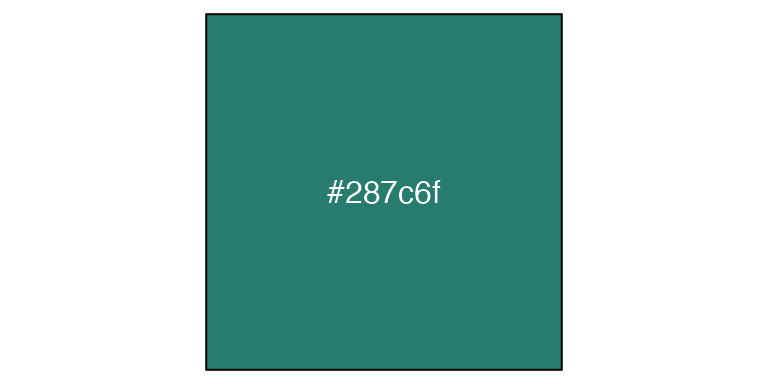
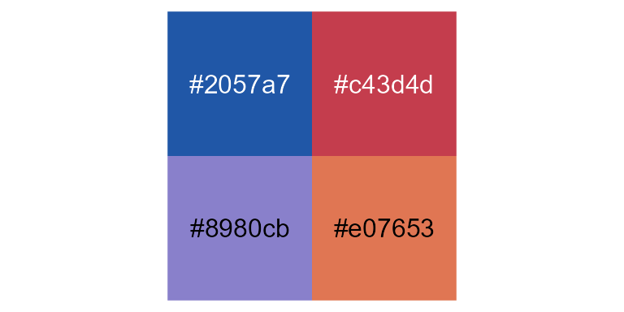
To access the full list of discrete or continuous palettes, see the si_palettes list or call the color palette directly using the name (si_palettes$color_name). Color names that are singular (genoa, old_rose) are categorical palettes based on suggested color pairs. Color names that are plural (genoas) are continuous palettes that can be applied to continuous variables. If you attempt to apply a discrete palette to a continuous variable, the color pairs will be recycled to the length of the vector you are attempting to encode.
# Returns the recommended paired colors with genoa as the base
si_palettes$genoa %>% show_col(labels = F, borders = F)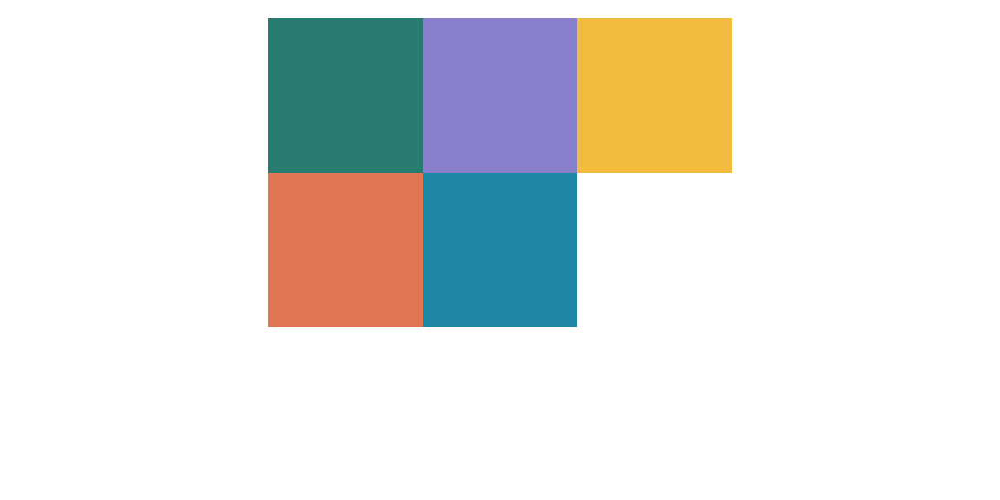
# Returns an interpolated vector of color values around the base genoa color
si_palettes$genoas %>% show_col(labels = F, borders = F)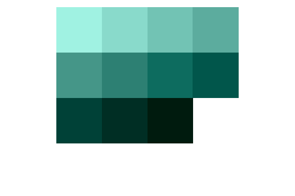
Finally, if you want to create a custom palette from one of the color sets in the si_palettes list, you can do this using the si_rampr() function.
# si_rampr takes a palette name and the number of interpolated colors (n) you wish to return as arguments.
denim_pal <- si_rampr(pal_name = "denims", n = 25)
denim_pal
#> [1] "#BFDDFF" "#B4D3FF" "#A9C9FF" "#9EBFFE" "#93B5FE" "#89ABFC" "#7FA1F6"
#> [8] "#7597EF" "#6B8FE6" "#6187DD" "#577ED4" "#4D76CA" "#436EC1" "#3666B7"
#> [15] "#2A5EAE" "#1E56A5" "#114E9C" "#064693" "#033E89" "#00357F" "#002D75"
#> [22] "#00256B" "#001C61" "#001458" "#000C4F"
show_col(denim_pal, labels = F, borders = F)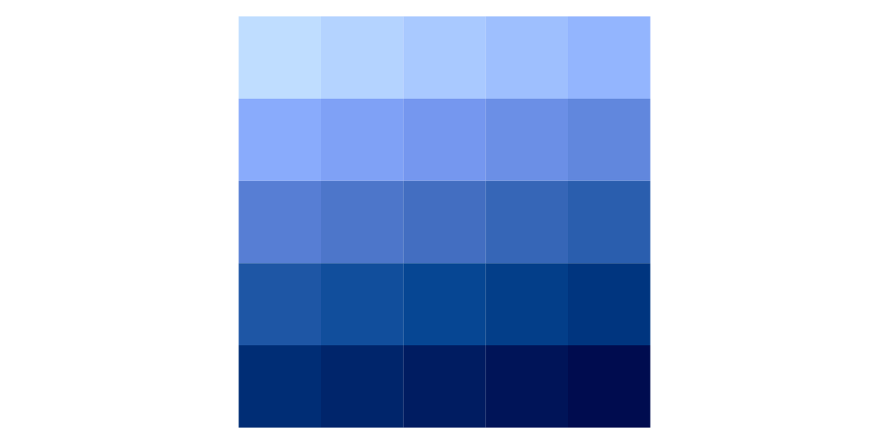
Applying Colors
To add any of these colors to a graph, pass them as arguments in a ggplot2 call. We will work with one of the sample data sets to create a bar graph where positive testing results are colored with scooter.
# Munge the hts data down to testing yields for a given year
hts_bar <-
hts %>%
filter(period == "FY50", period_type == "cumulative") %>%
group_by(indicator, primepartner) %>%
summarise(total = sum(value, na.rm = TRUE)) %>%
ungroup() %>%
spread(indicator, total) %>%
mutate(positivity = (HTS_TST_POS / HTS_TST),
prime_order = fct_reorder(primepartner, HTS_TST)) %>%
arrange(prime_order)
# Define testing results to be grey30k and positive results to be scooter.
# Play close attention to where the fill is placed in the geom_col() call.
# If placed inside the aesthetics, you will need to apply scale_fill_identity() to get the colors to render.
p <- hts_bar %>%
ggplot(aes(y = prime_order)) +
geom_col(aes(x = HTS_TST), fill = grey30k) +
geom_col(aes(x = HTS_TST_POS), fill = scooter) +
labs(x = NULL, y = NULL, title = "HTS_TST_POS FILLED WITH SCOOTER COLOR",
subtitle = "ggplot2 default settings | Not real data.")
p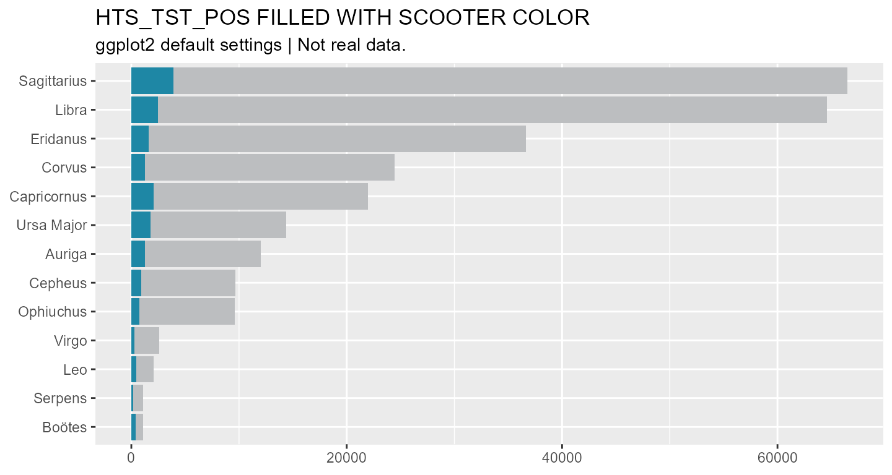
Another way to use colors in plots is to assign color values to a new column in a data frame. For example, say we would like to highlight the two partners that have conducted the greatest number of tests. First, we will create a ranking variable that ranks partners by total testing. Then we will assign a set of colors based on the rankings.
# Create a rank column, then assign colors based on threshold (<=2)
hts_bar_rnkd <- hts_bar %>%
mutate(hts_rank = dense_rank(desc(HTS_TST)),
rnk_color = case_when(
hts_rank <= 2 ~ denim,
TRUE ~ golden_sand
)
)
hts_bar_rnkd %>% filter(hts_rank < 7)
#> # A tibble: 6 x 7
#> primepartner HTS_TST HTS_TST_POS positivity prime_order hts_rank rnk_color
#> <chr> <dbl> <dbl> <dbl> <fct> <int> <chr>
#> 1 Ursa Major 14360 1740 0.121 Ursa Major 6 #f2bc40
#> 2 Capricornus 21920 2020 0.0922 Capricornus 5 #f2bc40
#> 3 Corvus 24430 1240 0.0508 Corvus 4 #f2bc40
#> 4 Eridanus 36620 1560 0.0426 Eridanus 3 #f2bc40
#> 5 Libra 64580 2460 0.0381 Libra 2 #2057a7
#> 6 Sagittarius 66470 3870 0.0582 Sagittarius 1 #2057a7
# Assign colors to top two ranked prime partners and plot.
# Use the scale_fill_identity() to let ggplot2 know where fill is from.
hts_bar_rnkd %>%
ggplot(aes(y = prime_order, x = HTS_TST, fill = rnk_color)) +
geom_col() +
scale_fill_identity() +
labs(x = NULL, y = NULL, title = "HTS_TST FILLED BASED ON IDENTITY",
subtitle = "ggplot2 default settings | Not real data.")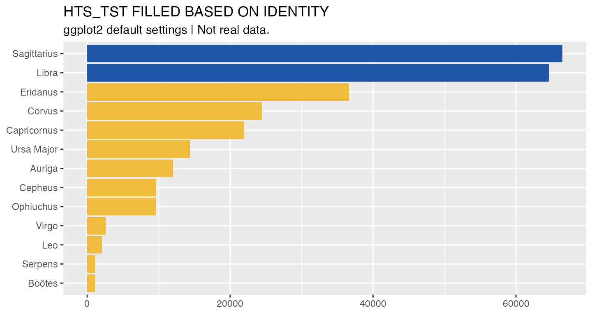
To apply a continuous SIEI palette to a visualization, you can use the scale_fill_si() or scale_color_si() function. In the example below, we create a heat map, using geom_tile(), to show how testing targets vary across modality.
hts_hm <- hts %>%
filter(period_type == "targets", period == "FY50") %>%
group_by(primepartner) %>%
mutate(total_targets = sum(value, na.rm = T)) %>%
ungroup() %>%
mutate(partner_order = fct_reorder(primepartner, total_targets))
hts_hm %>%
ggplot(aes(x = modality, y = partner_order, fill = value)) +
geom_tile(color = "white") +
scale_fill_si(palette = "scooters") +
labs(x = NULL, y = NULL, title = "UNIMPRESSIVE HEAT MAP WITH SCOOTERS FILL",
subtitle = "ggplot2 default settings | Not real data.")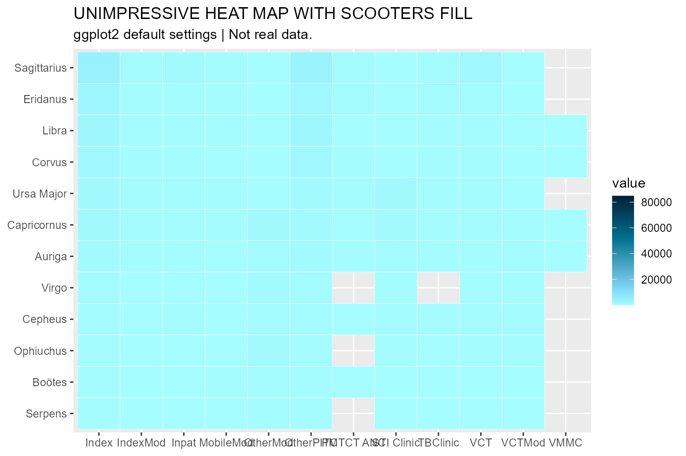
As is, this graphic is not too informative. Everything is a light shade of scooter. Why is this the case? If we were to look at the distribution of the data, we would see that it skews heavily toward 0. Many targets appear to be on the lower end, but a few outliers are really mucking up the color encoding. We can do a couple things to make this graphic more informative. Because the scale_fill_si() function takes the ... argument, we can pass a transformation option to the plot, as well as define a new set of breaks.
# Log transform data, clean up legend, apply semi-transparency (alpha) and label
hts_hm %>%
ggplot(aes(x = modality, y = partner_order, fill = value)) +
geom_tile(color = "white") +
scale_fill_si(palette = "scooters", alpha = 0.85, trans = "log",
breaks = c(1 * 10^(1:5)),
labels = comma,
name = "Targets") +
labs(x = NULL, y = NULL, title = "LOG-TRANSFORMED COLOR ENCODING",
subtitle = "ggplot2 default settings | Not real data.",
) +
geom_text(aes(label = ifelse(value > 10000, comma(value), NA_real_)),
size = 8/.pt, family = "Source Sans Pro", color = "white") +
scale_x_discrete(guide = guide_axis(n.dodge = 2), position = "top") +
theme_minimal()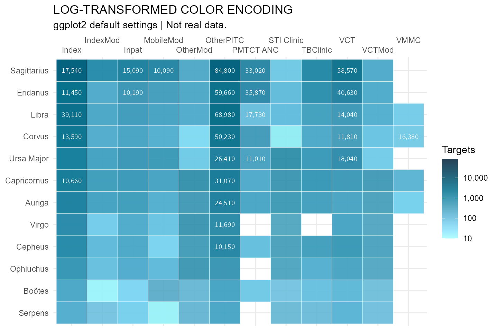
SI Themes
In order to create visualizations that appear to belong to the same family (Think Baldwin Brothers), glitr includes nine ggplot themes that simplify a plot down to its core elements. At the base of these themes is the si_style().
{kind=link}
grep("(si_style)", ls('package:glitr'), value = T)
#> [1] "si_style" "si_style_map" "si_style_nolines" "si_style_void"
#> [5] "si_style_xgrid" "si_style_xline" "si_style_xyline" "si_style_ygrid"
#> [9] "si_style_yline"We can see how this differs from the default ggplot2 theme by applying the theme to the plot above.
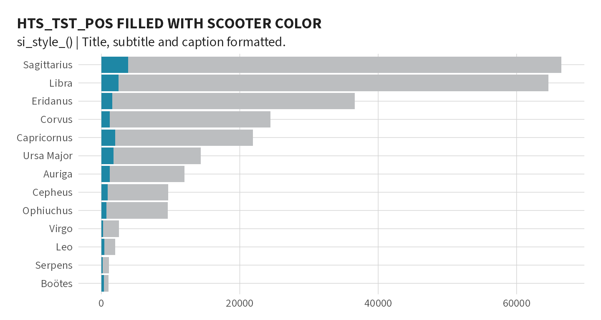
You will notice the si_style strips the background gray color and converts the grid lines to a light shade of gray. As this plot is oriented horizontally, we can remove the extra y gridlines by using the si_style_xgrid theme. All of the si themes also come with pre-formatted titles, subtitles, and captions following the style guild standards.
p +
si_style_xgrid() +
scale_x_continuous(labels = comma) +
labs(caption = paste("Generated on ", Sys.Date(), " by the SI team."),
subtitle = "si_style_xgrid() | Title, subtitle and caption formatted.") +
coord_cartesian(expand = F) # Move names closer to y-axis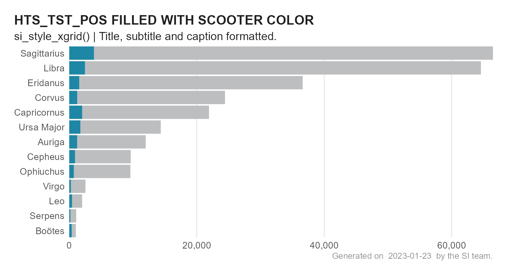
Comparing Themes
Below is a summary graphic showing all the available SI themes.
# Create a list of all themes to loop over
theme_list <- list('si_style()' = si_style(),
'si_style_xline()' = si_style_xline(),
'si_style_xgrid()' = si_style_xgrid(),
'si_style_xyline()' = si_style_xyline(),
'si_style_yline()' = si_style_yline(),
'si_style_ygrid()' = si_style_ygrid(),
'si_style_nolines()' = si_style_nolines(),
'si_style_void()' = si_style_void()
)
# Custom plot function to incorporate themes
custom_plot <- function(x) {
p + {{x}}
}
# Make all the plots
plots <- map2(theme_list, names(theme_list), ~custom_plot(.x) +
labs(subtitle = paste(.y), title = NULL) +
theme(axis.text = element_text(size = 12/.pt)))
# Create a sample map
hts_map <- hts_geo %>%
ggplot() +
geom_sf(aes(fill = primepartner)) +
si_style_map() +
scale_fill_si(palette = "siei", discrete = T) +
theme(legend.position = "none") +
labs(subtitle = 'si_style_map()')
reduce(plots, `+`) +
hts_map +
plot_annotation(subtitle = "A comparison of si_style() themes") +
plot_layout(ncol = 3)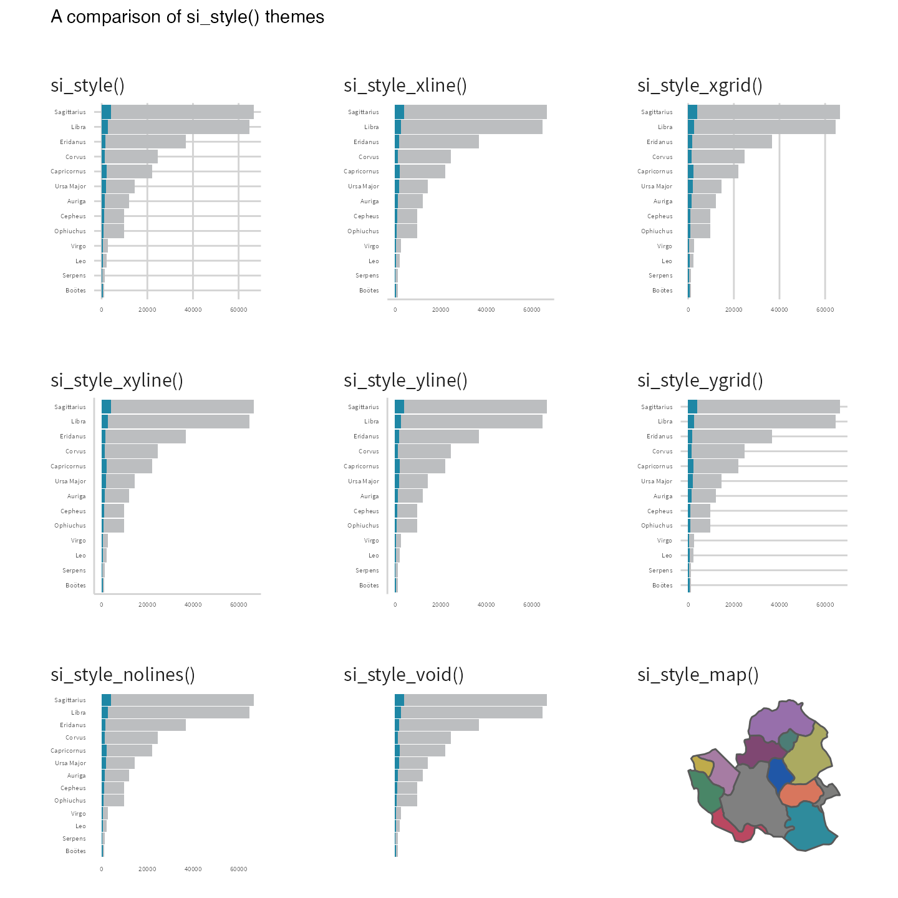